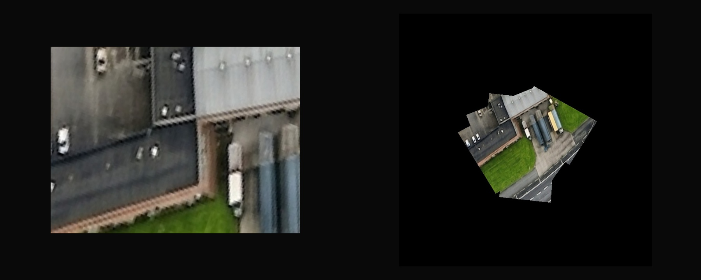

Try Sensoraia With Paparazzi¶
Fly a complete mission from takeoff to landing in Paparazzi NPS—even without a
MORA board or physical camera attached. Paparazzi flies the simulated aircraft;
USHER supplies sensor observations and target updates over a simulated local
UART (/tmp/usher-sim) or a real FTDI cable to MORA.
Prepare your first demo | Glossary | Install Sensoraia
Quick Start: Install Links With ./kickstart.sh¶
With Paparazzi already installed at ~/paparazzi, build the native PC
applications and link the Sensoraia configurations into Paparazzi:
./kickstart.sh installs userconf/SENSORAIA/sensoraia_demo_conf.xml and the
unified userconf/SENSORAIA/sensoraia_demo_control_panel.xml into
~/paparazzi/conf/, links the self-contained SENSORAIA flight plans,
airframes, radios, and telemetry profiles, and selects the demo configuration
(preserving any previous conf.xml and control_panel.xml links). Prefer
creating the symlinks yourself or keeping your active conf.xml untouched?
Use ./kickstart.sh --no-activate or follow the exact manual ln -s commands
in Manual Symlink Setup.
Start A Simulated Flight (Takeoff To Landing)¶
- Launch Paparazzi Center:
cd ~/paparazzi && ./paparazzi. - In Config, ensure
userconf/SENSORAIA/sensoraia_demo_conf.xmlanduserconf/SENSORAIA/sensoraia_demo_control_panel.xmlare selected. - Pick the aircraft for the camera you want to fly (for example
Easystar_3_SPOTTERCAMorBebop_DIPLACAM), select target nps, and click Build. - Open the Session tab, select the matching Sensoraia \<Camera> NPS session, and click Execute.
- In PprzGCS, wait for live aircraft telemetry and a valid 3D GPS fix
(
Holding pointorGround standby), then click Takeoff. - Watch the aircraft climb, fly its camera mission, and complete its landing
sequence (
Land$\rightarrow$Final$\rightarrow$Flareon fixed-wing demos, or Return $\rightarrow$ Land Here onBebop_DIPLACAM), then click Stop in Center before starting another session.
Starting the session programs does not command takeoff. Do not start a second
USHER or simulator on the same endpoints. For MORA hardware-in-the-loop over an
FTDI cable, select Sensoraia MORA desk NPS (which omits PC USHER so nps
connects straight to /dev/ttyUSB0).
See the complete flight walkthrough.
Choose Your Camera Demo¶
| Camera / Mode | Supplied Aircraft | Paparazzi Center Session | What Happens In Flight |
|---|---|---|---|
| Spottercam | Easystar_3_SPOTTERCAM (Fixed wing) |
Sensoraia Spottercam NPS | Captures mock vehicle views, runs native YOLO11n ONNX detection, and projects ranked hits onto T1..T5 |
| AI Camera | Easystar_3_AICAM (Fixed wing) |
Sensoraia AIcam NPS | Periodic wings-level visible-camera survey photos tagged with EXIF flight pose |
| LWIRcam | Easystar_3_LWIRCAM (Fixed wing) |
Sensoraia LWIRcam NPS | Thermal survey capture and session protocol flow |
| CHDKbridge | Easystar_3_CHDKCAM (Fixed wing) |
Sensoraia CHDKcam NPS | Ticketed optical zoom, distance-triggered survey photos, and pre-landing lens retraction |
| EARcam | Easystar_3_EARCAM (Fixed wing) |
Sensoraia EARcam NPS | Flower search over a simulated acoustic beacon and guarded TARGET waypoint update |
| LOOMcam | Easystar_3_LOOMCAM (Fixed wing) |
Sensoraia LOOMcam NPS | Outbound reference archiving (START) followed by return-leg evaluation (STOP) |
| MIMIC / PANGEA | Easystar_3_MIMIC (Fixed wing) |
Sensoraia MIMIC PANGEA NPS | Renders camera views from cached aerial tiles and reconstructs a georeferenced photo map |
| Diplacam | Bebop_DIPLACAM (Rotorcraft) |
Sensoraia Diplacam NPS | Native GP/diffusion planner refreshing eight 2 m sampling waypoints (P1..P8) |
Fixed-wing flight plans and the Bebop_DIPLACAM rotorcraft flight plan are not
interchangeable: always pair a flight plan with the matching vehicle firmware.
Add The Paparazzi Module To Your Own Aircraft¶
The supplied Easystar_* and Bebop_DIPLACAM demo aircraft already include
everything needed. When adding Sensoraia to your own Paparazzi aircraft:
- Point Paparazzi at Sensoraia's shared protocol headers/sources:
Export
SENSORAIA_SRC=/path/to/sensoraiain the environment before building your aircraft in Paparazzi Center ormake.digital_cam_uartcompilesusher_protocol.candcamera_control.cdirectly from$SENSORAIA_SRC/srcwhile preserving Paparazzi's standarddc.c/dc.hboundary. - Add
digital_cam_uartto your airframe XML (<target name="ap">and<target name="nps">):
<module name="digital_cam_uart">
<!-- Hardware autopilot target ("ap"): select the FC UART wired to MORA's 3.3 V GPIO14/15 -->
<configure name="CAMERA_PORT" value="uart4"/>
<!-- Stream periodic pose updates (required by EARcam and pose-aligned sensors) -->
<define name="DIGITAL_CAM_UART_POSE_STREAM" value="1"/>
<!-- Optional default camera bitmask (1=CHDK, 2=AIcam/Spotter/LOOM, 4=LWIR, 8=EARcam, 16=Diplacam) -->
<define name="DIGITAL_CAM_UART_CAMERA_MASK" value="2"/>
</module>
Do not enable a second conflicting digital_cam_* transport in the same
target. On the nps simulation target, CAMERA_PORT is replaced
automatically by the local /tmp/usher-sim bridge (or your FTDI cable).
3. Add digital_cam_point in your flight plan XML whenever your mission
consumes geographic target points returned by USHER (EARcam, Spottercam,
LWIRcam, LOOMcam, or Diplacam):
Use uart_cam_ctrl_set_camera_mask(...) to choose which camera triggers,
digital_cam_uart_start(CAM) / digital_cam_uart_stop(CAM) for session
sensors, and cam_point_fresh(CAM) + cam_point_valid(CAM) +
cam_point_to_waypoint(CAM, WP_TARGET) + cam_point_consume(CAM) to validate
and apply returned target coordinates safely without altering flight altitude.
MIMIC And PANGEA¶
Cache aerial imagery over the example route and surrounding camera footprint in pprzgcs before starting. The session renders camera-view photographs from the aircraft pose, and PANGEA works from those saved photographs, not by stitching the provider's original tiles directly.

Use the MIMIC guide for cache preparation and PANGEA for map inputs and output files. Missing terrain imagery is a capture problem to resolve, not a reason to substitute invented field texture.
Understand Waypoint Updates¶
An observation, an accepted point and a navigation decision are different events. A GCS shot marker records an admitted trigger, not necessarily a saved photograph. Moving a target waypoint does not itself select a block or tell the aircraft to visit it.
The UART module can suppress shot reports independently of triggering and returned results. The Diplacam demo uses this to avoid dense yellow shot markers; see reporting controls for airframe defaults, flight-plan calls and the live GCS setting.
The flight plan retains control of the route and flight altitude. Invalid, stale or unconfirmed points must not be treated as new targets. A normal mission can finish without a usable detection or sound fix.
MORA In The Loop¶
Use the Laptop to MORA desk test to connect NPS through an FTDI cable to real USHER. It includes the setup illustration, 5 V power and 3.3 V UART pin table, dedicated Center session and mock-then-real capture steps. This is a supported user workflow, not a private regression procedure.
If The Demo Does Not Start¶
Check that the configuration selects the intended flight plan, every session program remains running, and no earlier session owns the ports. Read the first reported error rather than starting duplicate programs. Module guides explain their specific model, cache and sensor requirements.